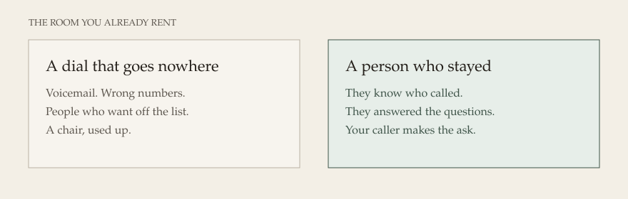
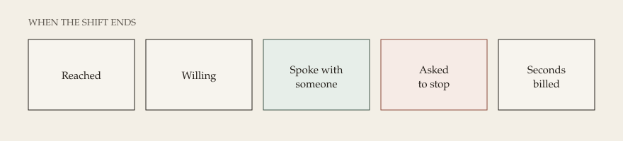

OneBC · one riding · daytime
You have already rented the centre. Your people already know a shift. The missing piece is a chair used for a person who stayed, not for a recording that no one answers.
They hear who is calling. They answer yes or no. If they stay, someone in the room asks for their support. The recording never does. If they want off the list, they are off. The next shift does not begin with the same complaint.
You can walk the floor and know the day. You can stop it. You can set a dollar limit before the first call, and the shift ends at that limit. You hear the greeting yourself, on your own computer, before the room uses it.


This is canvassing. The people called are voters and candidates. A recording may identify who is calling and ask yes or no. It may not ask for a vote, money, or support. That ask is a person in the room. If no one is free, the call ends. Nobody is left on hold.
Parties are exempt from the National Do Not Call List. They are not exempt from identifying themselves, or from honouring a person who asks to stop. The desk will not dial unless the opening, the hours, and your permission for the list are in place.
The detail, including privacy and the difference between a federal registration and a B.C. election rule, is on The rules. This page is the design. It is not a lawyer’s letter. Outbound stays off until you turn it on.
This is for one riding, on daytime hours, through 24 October 2026. It is not switched on. It does not call anyone until you say the shift is ready.
What I need from you is the riding, the list you already have a right to call, the name people should hear, a callback number, the hours, and the emails of the people in the room.
$800 is my time and the machines I build on. About $700 is an estimate for accounts you open and they bill to you. I stop if that estimate reaches $700. Phone minutes are yours, Canada to Canada, counted in steps of six seconds. That is the closest we can get for now. A company that rounds every call up to a full minute will not be used. VoIP.ms is the six-second account the riding can use. Telnyx bills full minutes and stays on the doctor search only. They are not inside either figure.
No program to install. No server for you to run. Calls stay in Canada. A number is called once. English is first. The build resumes after 1 October, or sooner if the larger coding plan is in place. Nothing in this page places a call.